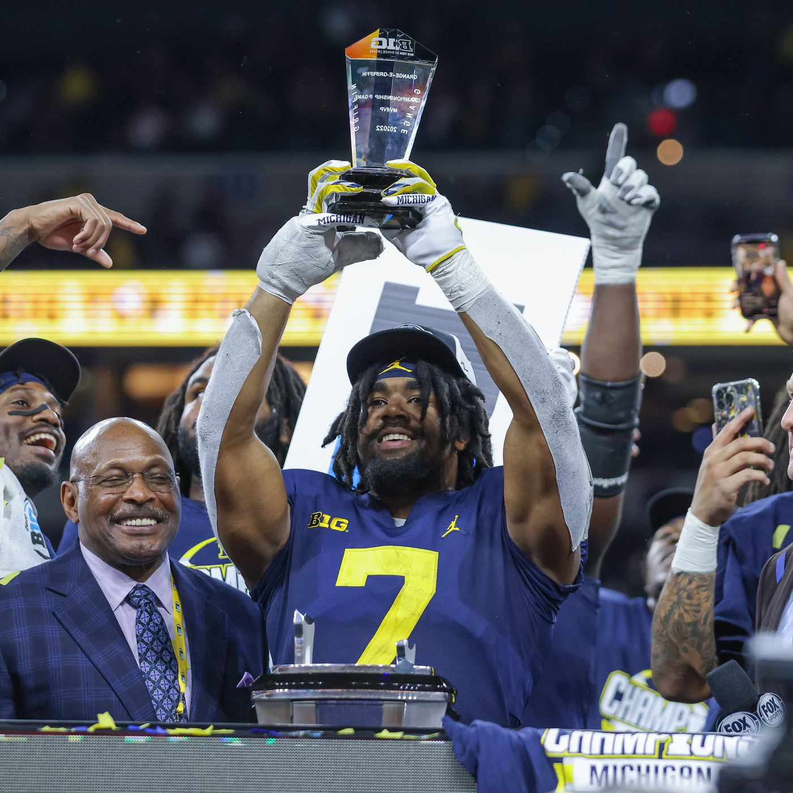
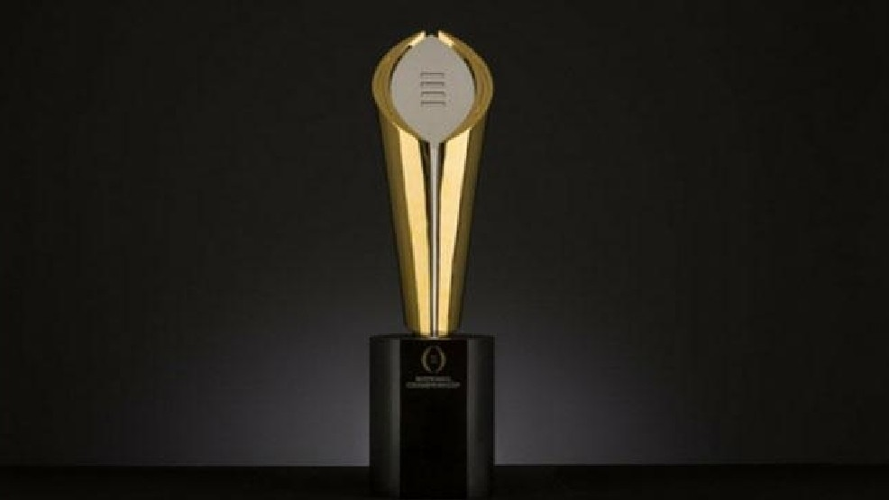

The bracket for the 2022 College Football Playoff. This features the Georgia Bulldogs at the #1 Seed, your Michigan Wolverines at the #2 seed, the Texas Christian University Horned Frogs, and lastly at the #4 seed, the Ohio State Buckeyes. The Georgia Bulldogs and Ohio State Buckeyes will be playing in the Chic-Fil-A Peach Bowl in Atlanta, Georgia. The Michigan Wolverines and Texas Christian Horned Frogs are playing in the Fiesta Bowl in Glendale, Arizona.
The University of Michigan's Football team just had its first undefeated regular season since 1997. On December 3rd, we beat Purdue University to be crowned Big 10 Champtions. Next up for the Wolverines is the College Football Playoff. The Committee decided we were deserving of the #2 seed. Therefore, we will be playing TCU in the Fiesta Bowl in the Semifinals. If we win this game, we will face off against the winner of Georgia, the team who knocked us out of the playoff last year, and Ohio State, our bitter rival who we beat earlier this season. LETS GO BLUE!

Donovan Edwards holding the trophy for the most valuable player in the Big 10 Championship game. He had 25 carries for 185 yards and 1 touchdown as well as 1 reception for 4 yards. The award was presented to him by Big 10 commissioner Kevin Warren.

This is how The University of Michigan Football team enters the field for home games. This tradition of hitting the banner started in 1962.

This is the National Championship Trophy, the prized possesion in the sport. The Michigan Wolverines hope to bring this back to Ann Arbor.